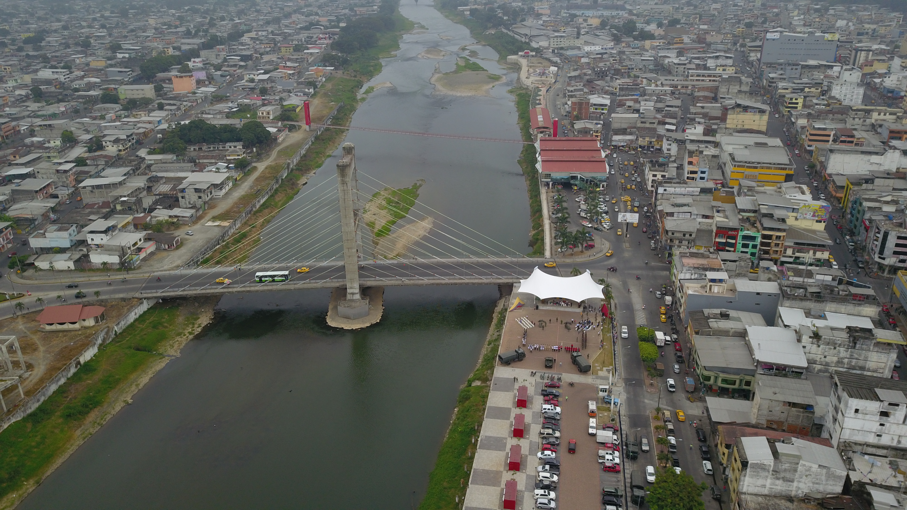
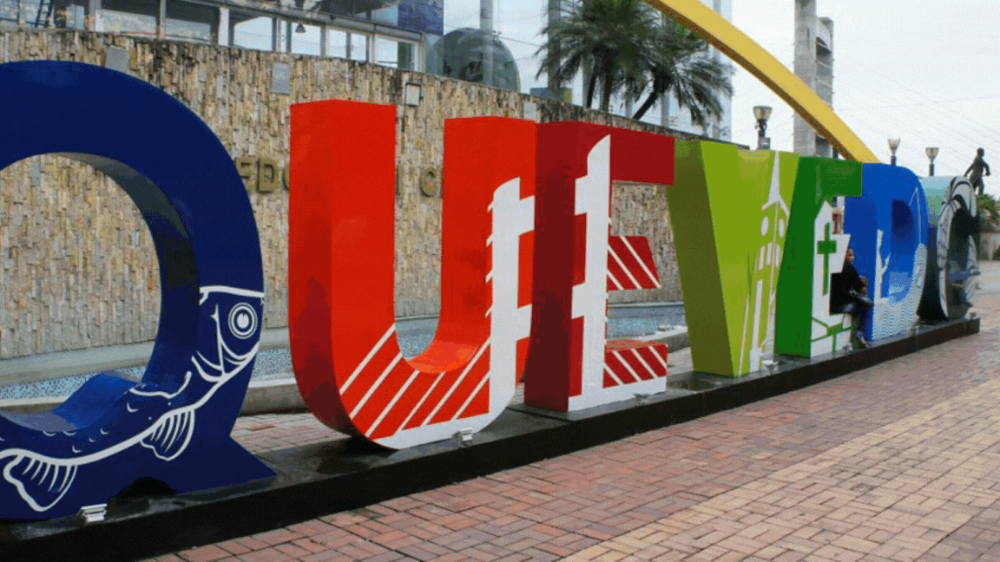

QUEVEDO🇪🇨

| HOME | GALERÍA | SITUACIÓN GEOGÁFICA | COSTUMBRES | SITIOS TURÍSTICOS |
|---|
Quevedo se encuentra situado en un hermoso lugar en el corazón del Litoral, por su posición geográfica y vial privilegiada
ha beneficiado al país, además permite un intenso tráfico terrestre. Posee un clima que beneficia para el cultivo.
Es una población situada en las orillas del río Quevedo en el sector denominado "Las lomas". se encuentra ubicada
al 1° 20′ 30″ de Latitud Sur y los 79° 28' 30" de Longitud occidental, dentro de una zona subtropical.
La ciudad de y el cantón Quevedo, al igual que las demás localidades ecuatorianas, se rige por una municipalidad según lo
previsto en la Constitución de la República. El Gobierno Autónomo Descentralizado Municipal de Quevedo,
es una entidad de gobierno seccional que administra el cantón de forma autónoma al gobierno central.
La municipalidad está organizada por la separación de poderes de carácter ejecutivo representado por el alcalde,
y otro de carácter legislativo conformado por los miembros del concejo cantonal.
|   |